Electrical & Electronic Engineering Portfolio
Engineering systems from circuit to software.
I build practical systems by connecting power engineering, circuit design, control systems, embedded boards, PLC automation, and AI vision. My focus is on working solutions that can be tested, improved, and explained clearly.
About
Final-year EEE student with practical hardware and software work.
I am Badr Albdulmajeed, a final-year Electrical and Electronic Engineering student at Asia Pacific University. My work is not focused only on one area. I have worked with power system analysis, relay protection, MATLAB/Simulink simulations, embedded controllers, PLCs, Raspberry Pi, Jetson Orin Nano, and AI-based machine vision systems.
This portfolio is arranged around my engineering strengths. It shows how I connect electrical design, electronic control, programming, and testing into practical projects. The main goal is to show my ability to build complete systems, not only write code or only do theory.
Engineering Focus
Work grouped around Electrical and Electronic Engineering.
Power Systems & Protection
Power flow, 10-bus network analysis, overcurrent protection, IDMT relay coordination, IEC/IEEE inverse curves, fault analysis, and TCC plotting.
Embedded Control & Hardware
Raspberry Pi 5, Jetson Orin Nano, ESP32, Arduino, sensor interfacing, relay circuits, motor control, RFID, and real-time system logic.
Automation & PLC
Siemens PLC exposure, TIA Portal SCL, pneumatic systems, bus door automation, Industry 4.0 workflow integration, and industrial inspection systems.
AI Vision for Engineering
OpenCV, Roboflow, YOLOv8, Vision Transformers, segmentation, classification, detection, ONNX Runtime, GUI testing, and deployment.
Featured Final Year Project
PCB component inspection using self-supervised vision and real-time detection.
This is my main final year project and the strongest project in the portfolio. The system focuses on automated PCB component inspection by combining classification, object detection, dataset refinement, and deployment testing. It is related directly to Electrical and Electronic Engineering because it connects PCB manufacturing, electronic components, AI inspection, and practical deployment.
PCB Images
Roboflow Dataset
ViT + RF-DETR
Inspection Dashboard
Experience & Education
Industrial work and engineering study.
March 2025 – July 2025
R&D Project Engineer · Control easy
Developed and deployed machine vision systems for industrial quality control. The work included fabric classification, PCB component inspection, wood defect segmentation, golf ball classification, GUI testing, hardware interfacing, PLC workflow integration, and technical manuals.
- Built a real-time inspection station using Raspberry Pi 5, a proximity sensor, camera triggering, and a Vision Transformer model.
- Interfaced a 24V industrial sensor with a 3.3V Raspberry Pi 5 using a relay circuit.
- Worked with Siemens PLCs including S7-300, S7-200, S7-1200, and SCL programming in TIA Portal.
2020 – Expected 2026
B.Eng Electrical and Electronic Engineering with Honours · APU
Final-year engineering student with projects across power systems, embedded systems, control, automation, machine vision, simulation, and technical documentation.
2017 – 2019
American High School Diploma · Sama American School
Completed high school education before starting undergraduate engineering study.
Projects
Engineering projects with electrical, electronic, software, and AI work.
The projects below are written to show the engineering problem, the tools used, and the practical output.
Showing all projects
Click any project card to open a quick project summary.
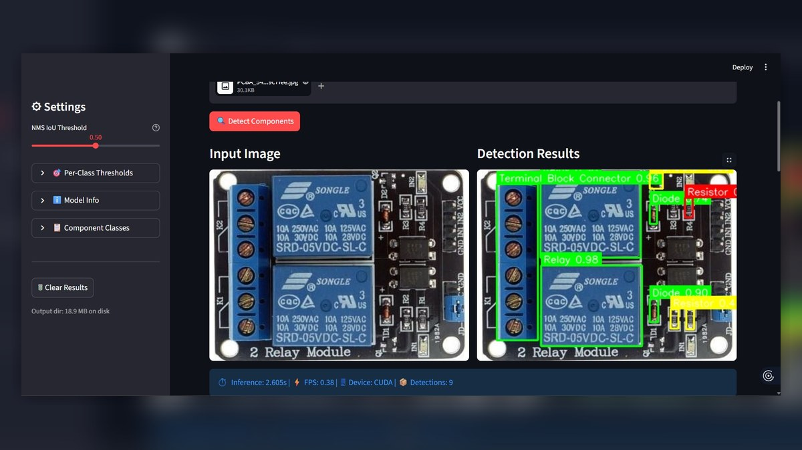
PCB Component Inspection with Self-Supervised ViT and RF-DETR
Designed an AI inspection pipeline for PCB components using MaxViT-Small with SimCLR domain-adaptive pretraining for classification and RF-DETR Small with a DINOv2 backbone for detection. The project also used Roboflow dataset versions, ONNX Runtime, and a Streamlit dashboard for real-time testing.
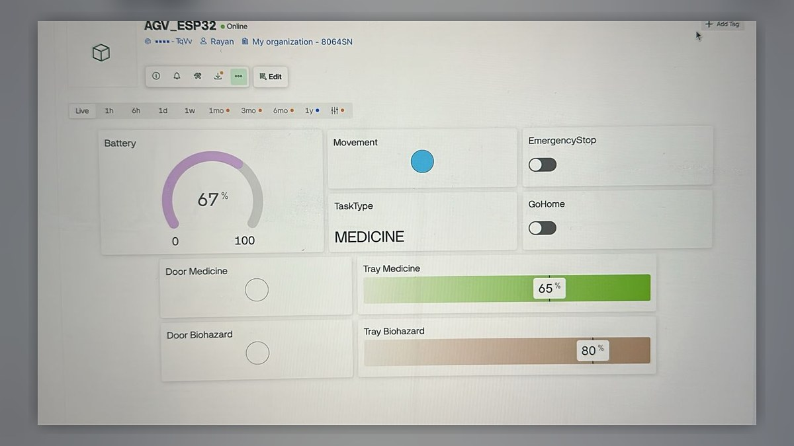
Hospital Logistics AGV Vision System
Developed the vision and safety subsystem for a hospital AGV using Jetson Orin Nano, ZED 2i stereo camera, YOLOv8, Roboflow, OpenCV, PyTorch, ONNX Runtime GPU, and PyQt5.
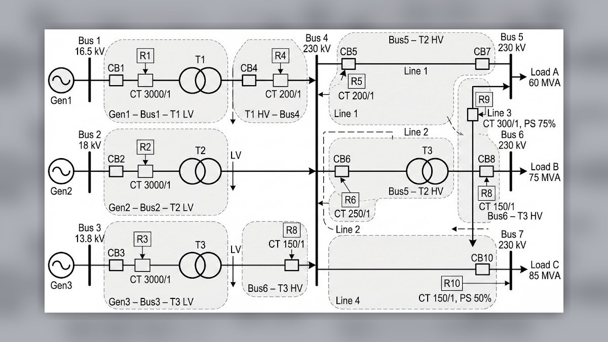
AC Microgrid Overcurrent Protection
Built a 3-bus AC microgrid in MATLAB/Simulink and tested overcurrent relay operation under IEC and IEEE inverse relay characteristics for different fault cases.
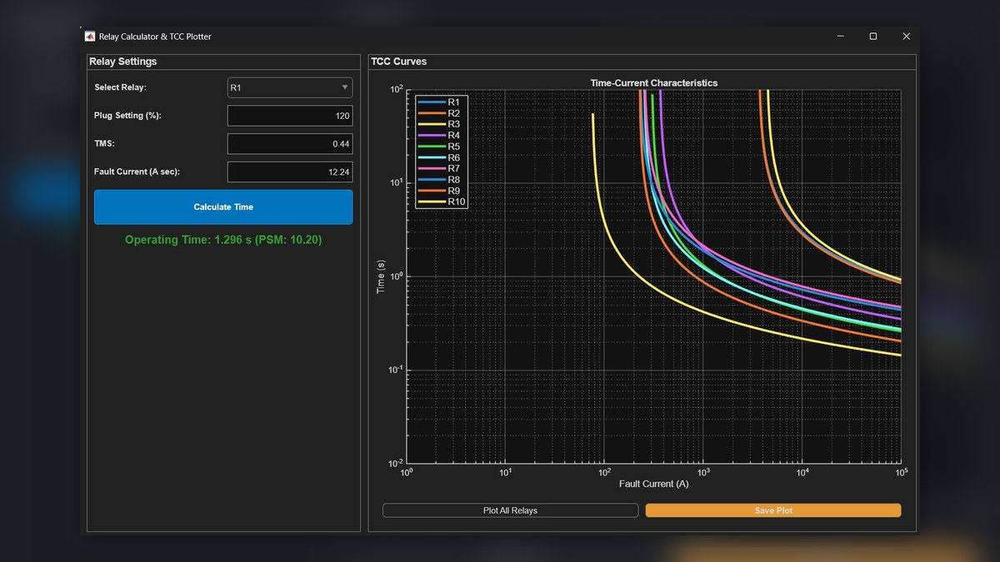
Overcurrent Relay Coordination GUI
Developed a MATLAB App Designer tool for R1–R10 relay calculations, TCC curve plotting, relay validation, and coordination checks for power system protection.
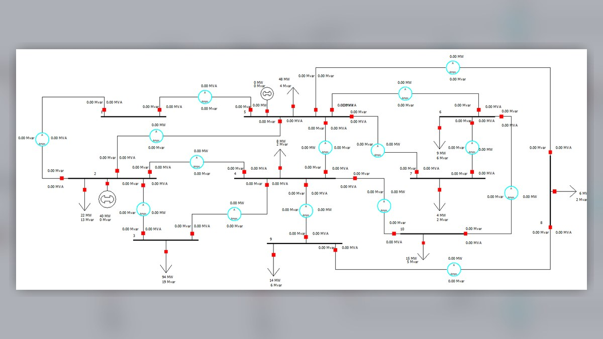
10-Bus Power Flow Analysis
Analysed a 10-bus power system using Newton-Raphson, Gauss-Seidel, and Fast Decoupled methods in MATLAB and PowerWorld Simulator to study voltage, flow, and losses.
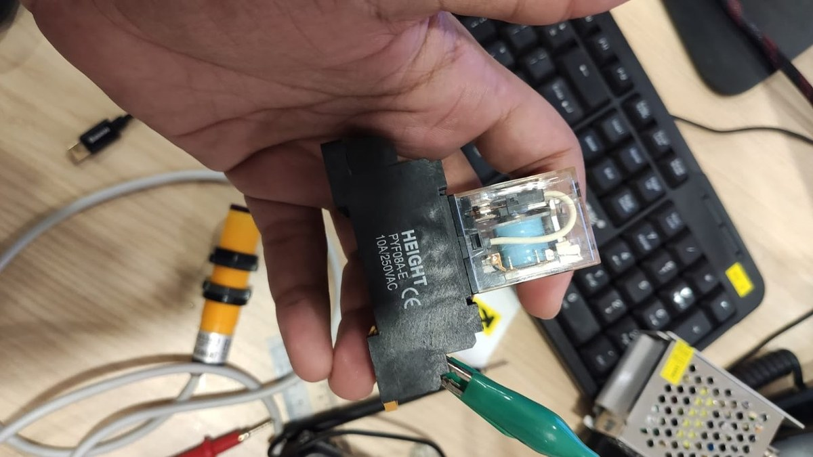
Automated Golf Ball Quality Control Station
Engineered an inspection station using Raspberry Pi 5, proximity sensor input, camera triggering, and a Vision Transformer model for real-time classification and sorting.
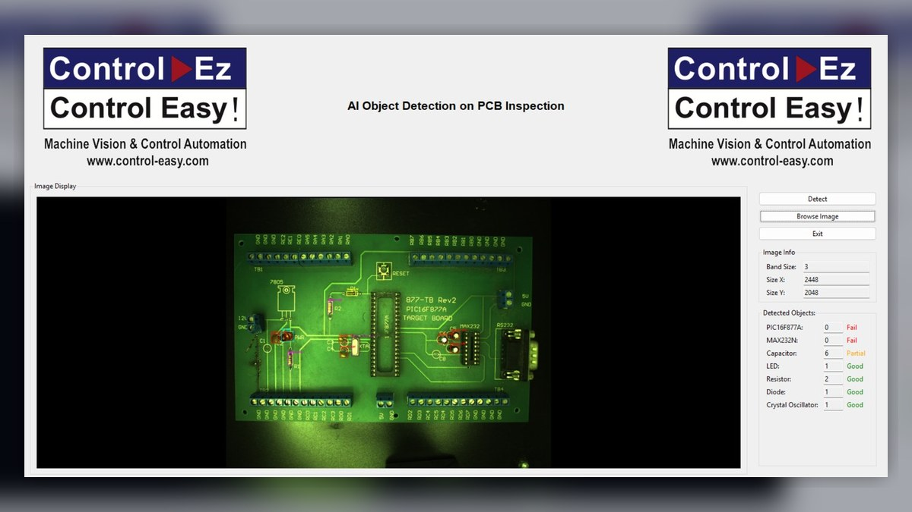
PCB Component Inspection System
Developed an inspection system using object detection, segmentation, and custom logic to locate PCB components and reduce false positives during component verification.
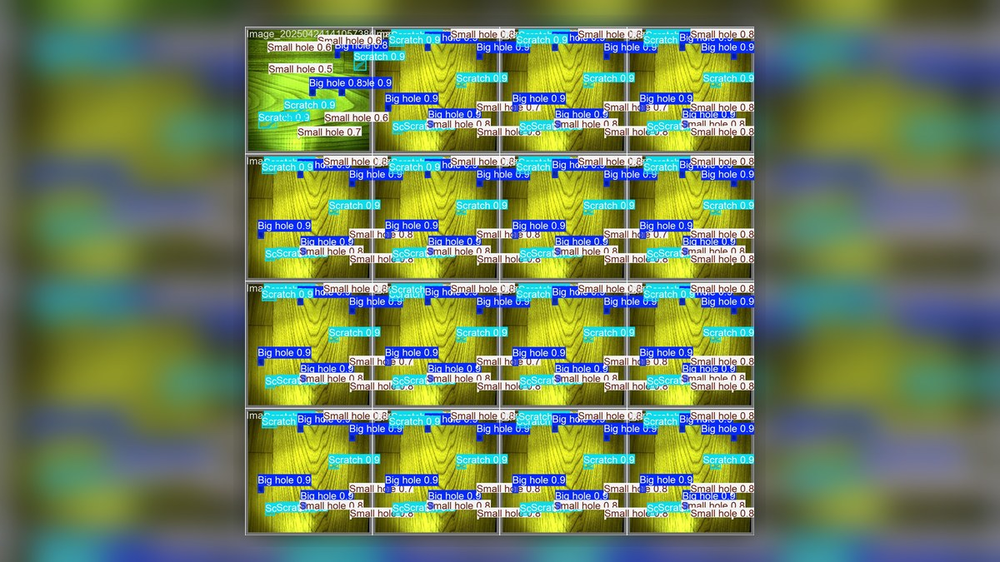
Wood Defect Segmentation System
Built an instance segmentation application to outline scratches and holes on wood surfaces and support defect analysis with a quality score.
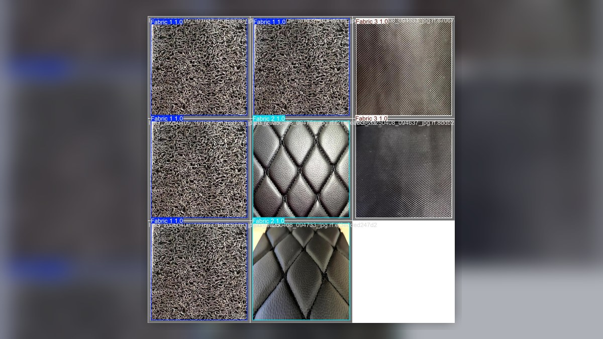
Fabric Quality Control Systems
Created fabric classification and detection systems using machine vision and AI models, with deployment on PC and Raspberry Pi platforms.
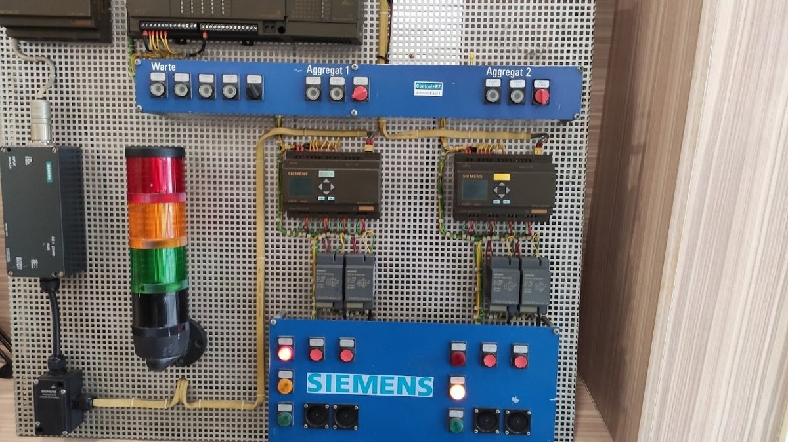
Automated Bus Door Control
Developed a PLC and pneumatic control system for an automated bus door, applying sensor logic, actuator control, and safety-based operation.
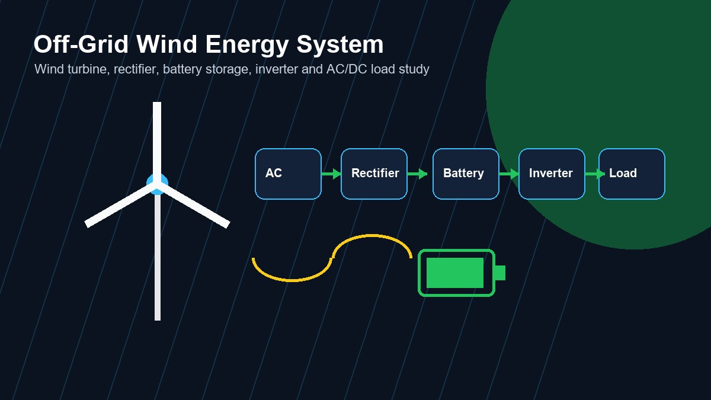
Off-Grid Wind Energy System
Designed and simulated an off-grid wind energy system for DC and AC applications, including battery storage and Simulink-based system analysis.
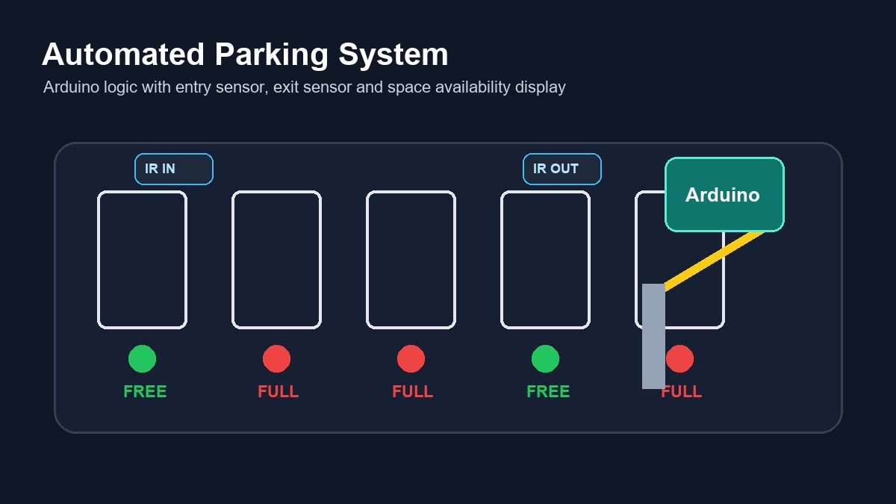
Automated Parking System
Managed and contributed to an Arduino-based parking system using sensors and control logic to automate entry, exit, and parking availability.
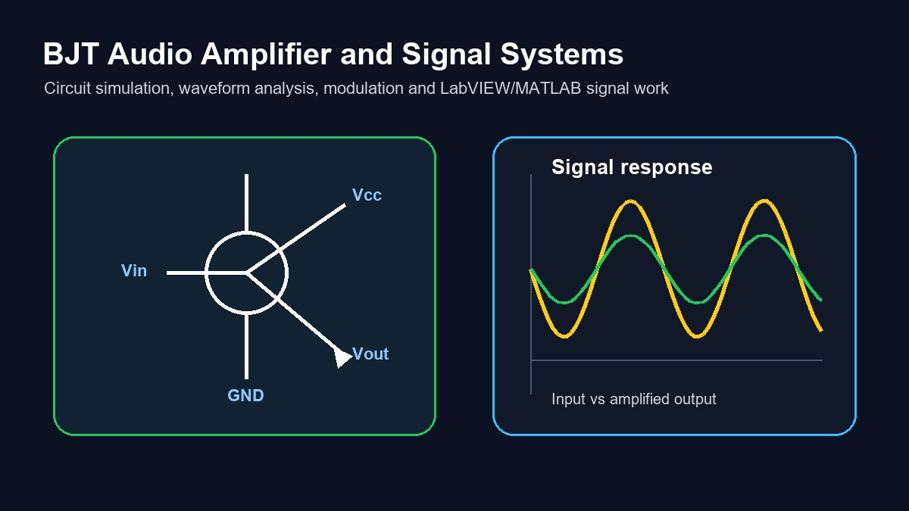
BJT Audio Amplifier and Signal Systems
Built and simulated BJT amplifier, sound purification, discrete-time systems, and frequency modulation/demodulation projects using MATLAB and LabVIEW.
Technical Skills
Tools and skills arranged by engineering use.
Embedded & Hardware
- NVIDIA Jetson Orin Nano
- Raspberry Pi 5
- ESP32 and Arduino
- Sensor interfacing and relay circuits
- ZED 2i stereo camera and RGB-D sensing
- RFID, LiDAR, motor control, and camera triggering
Power & Simulation
- MATLAB and Simulink
- PowerWorld Simulator
- MATLAB App Designer
- IDMT relay settings and TCC curves
- Load flow analysis and fault analysis
- LTspice, Dialux, LabVIEW, and SolidWorks
Automation & PLC
- Siemens S7-300, S7-200, and S7-1200 exposure
- TIA Portal and SCL programming
- Industrial sensor integration
- PLC-controlled workflow support
- Pneumatic control systems
- Industry 4.0 machine integration
AI Vision & Software
- OpenCV, Roboflow, YOLOv8, and Vision Transformers
- PyTorch, CUDA, JetPack, and ONNX Runtime GPU
- Classification, detection, segmentation, and augmentation
- Python, C, C++, and C#
- PyQt5, Tkinter, Streamlit, and basic web development
- Dataset creation, validation, and technical documentation
No project matched the current search.
Programme Outcome SWOT
SWOT analysis based on my Programme Outcome attainment.
This reflection is based on my PO card and radar chart. The strongest outcomes are PO1, PO3, PO6, PO7, PO10, PO11, and PO12. The main improvement areas are PO8, PO2, and PO9.
PO Attainment Radar Chart
Y4S1 Result Overview
Strengths
My strongest areas are PO1, PO3, PO6, PO7, PO10, PO11, and PO12, where I achieved full attainment. This shows a good foundation in engineering knowledge, design ability, societal awareness, sustainability, communication, project management, and lifelong learning.
These strengths are also shown in my practical work, including AI vision, embedded systems, automation, power system analysis, relay protection, and my final year project. These projects helped me apply engineering theory into working systems.
Weaknesses
The main weakness is PO8, where I achieved 0.50. This shows that I need to improve how I reflect on ethics, professional responsibility, safety, and the impact of engineering decisions.
PO2 at 0.67 also shows that my problem analysis can be stronger. I need to explain the engineering problem, compare methods, and justify the selected solution more clearly. PO9 at 0.75 also shows that I should record my teamwork contribution more clearly.
Opportunities
My final year project gives me a good chance to improve PO2, PO8, and PO9. For PO2, I can write clearer problem analysis and method comparison. For PO8, I can include reflection on safety, responsible AI use, data reliability, false detection risk, and professional responsibility.
My internship, power system projects, relay coordination work, AGV project, and portfolio development can also support future job applications because they show both technical skill and practical exposure.
Threats
Electrical and electronic engineering is changing quickly, especially in AI, automation, embedded systems, power protection, and industrial control. If I do not keep learning, my technical skills can become outdated.
Another threat is that strong technical work alone is not enough. My projects also need clear problem analysis, safety consideration, ethical reflection, and teamwork evidence. Time pressure during final year can also affect documentation quality if I do not manage my work carefully.
Action Plan
My main improvement plan is to focus on PO8, PO2, and PO9.
PO8Write clearer reflection on safety, ethics, professional responsibility, responsible AI use, data privacy, and engineering decision impact.
PO2Show more detailed problem analysis, method comparison, and technical justification in my final year project.
PO9Record my teamwork contribution, communication, leadership, task role, and support during group work.
Click Strengths, Weaknesses, Opportunities, or Threats to focus on that part of the reflection.
Engineering Development
Professional strengths and improvement areas.
Strength
Strong practical project work across power, embedded systems, PLC automation, machine vision, and GUI development.
Improvement Area
Continue improving formal engineering problem analysis, method comparison, technical writing, and evidence-based decision making.
Opportunity
Use final-year work, certifications, portfolio evidence, and industrial experience to move toward automation, AI vision, or power engineering roles.
Contact
Open to engineering roles, internships, and project discussions.
Use the contact form to prepare an email, or contact me directly through email, WhatsApp, or LinkedIn.